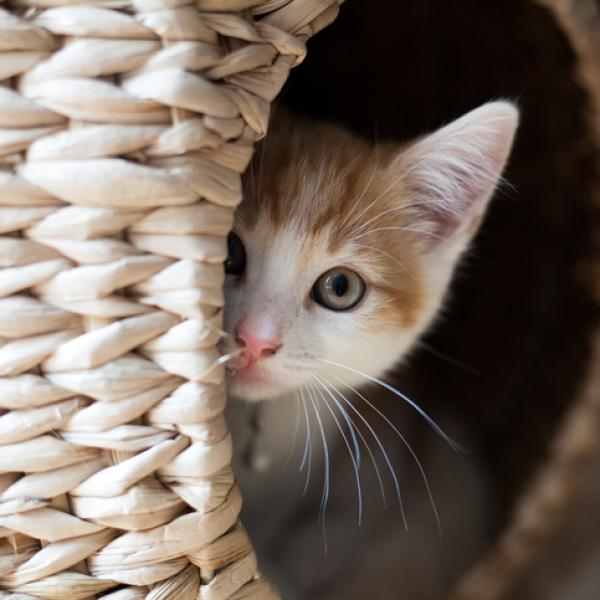

Blog
Consejos
A lo largo de su vida, los gatos tienen diferentes necesidades nutricionales dependiendo de su edad, su actividad fisica e incluso problemas de salud, Nosotros contamos con marcas de alimento con la mejor receta que le aportara a tu amigo felino una nutricion 100% completa, balanceada y sabrosa
Salud Gatuna

A lo largo de su vida, los gatos tienen diferentes necesidades nutricionales dependiendo de su edad, su actividad fisica e incluso problemas de salud, Nosotros contamos con marcas de alimento con la mejor receta que le aportara a tu amigo felino una nutricion 100% completa, balanceada y sabrosa
Etologia

a etología felina estudia el comportamiento de los gatos con el fin de procurar su bienestar, por ello, se estudian materias relevantes relacionadas con comportamientos inadecuados, entre los temas más destacados estan los problemas de eliminación, agresividad, aquellos asociados a alguna patología, edad avanzada, etc. Es importante conocer el comportamiento de los gatos, su lenguaje corporal, vocalizaciones, cómo empezar con su socialización, temas que cobran gran trascendencia en la medida que no son animales sociables en su totalidad, tampoco viven en grupos sociales jerarquizados, ni existe entre ellos reparto de tareas u otros trabajos característicos en otros animales, quizás por ello se les consideran animales solitarios, aunque en los últimos años han existido avances y estudios especializados en el comportamiento felino y su educación
Pelaje
A lo largo de su vida, los gatos tienen diferentes necesidades nutricionales dependiendo de su edad, su actividad fisica e incluso problemas de salud, Nosotros contamos con marcas de alimento con la mejor receta que le aportara a tu amigo felino una nutricion 100% completa, balanceada y sabrosa
Ejercicios y Juegos

A lo largo de su vida, los gatos tienen diferentes necesidades nutricionales dependiendo de su edad, su actividad fisica e incluso problemas de salud, Nosotros contamos con marcas de alimento con la mejor receta que le aportara a tu amigo felino una nutricion 100% completa, balanceada y sabrosa
Alimentacion
A lo largo de su vida, los gatos tienen diferentes necesidades nutricionales dependiendo de su edad, su actividad fisica e incluso problemas de salud, Nosotros contamos con marcas de alimento con la mejor receta que le aportara a tu amigo felino una nutricion 100% completa, balanceada y sabrosa
Comentario y Opiniones

A lo largo de su vida, los gatos tienen diferentes necesidades nutricionales dependiendo de su edad, su actividad fisica e incluso problemas de salud, Nosotros contamos con marcas de alimento con la mejor receta que le aportara a tu amigo felino una nutricion 100% completa, balanceada y sabrosa